កំណត់វិចារអនុមានរួមគណិតវិទ្យា
ការប្រើអនុមានរួមគណិតវិទ្យា
ទ្រឹស្តីបទទ្វេធា ។
គោលការណ៍នៃវិចារអនុមានរួមគណិតវិទ្យា
គេគ្រាន់តែសង្កេតមើលឧទាហរណ៍ខ្លះៗនៃផលបូកចំនួនគត់សេស
បន្ទាប់ពីបានរូបមន្តនេះមក គេត្រូវបញ្ជាក់ថារូបមន្ត \(P(n)\) ពិតចំពោះគ្រប់ចំនួនគត់ \(n\) ។ ក្នុងករណីនេះគេផ្តើមផ្ទៀងផ្ទាត់ \(P(n)\) ដោយឱ្យ \(n = 1\) ។
បើ \(n = 1\) \(1 = 1^2\) ដូច្នេះ \(P(1)\) ពិត ។
ឧបមាថា \(P(n)\) ពិត ចំពោះតម្លៃ \(n\) ណាមួយ ។ គេត្រូវស្រាយថា \(P(n)\) ពិតនាំឱ្យបាន \(P(n+1)\) ក៏ពិតដែរ ។
បើ \(P(n)\) ពិត គេបាន \(1 + 3 + 5 + \ldots + (2n - 1) = n^2\) ។ ដើម្បីស្រាយបញ្ជាក់ថា \(P(n+1)\) ពិតលុះត្រាតែគេបាន \(P(n+1) = (n+1)^2\) ។
របៀបស្រាយបញ្ជាក់
គេដឹងថា
វិចារអនុមានរួម \(P(n)\) ជាសំណើដែលទាក់ទងនឹងចំនួនគត់ \(n\) ។ ដើម្បីស្រាយបញ្ជាក់ថា \(P(n)\) ពិតចំពោះគ្រប់ \(n \in \mathbb{N}\) គេត្រូវ
ផ្ទៀងផ្ទាត់ថា \(P(n)\) ពិតចំពោះ \(n = 1\)
ឧបមាថា \(P(n)\) ពិតចំពោះតម្លៃ \(n\)
ស្រាយបញ្ជាក់ថា \(P(n)\) ពិតនាំឱ្យបាន \(P(n+1)\) ពិត ។
ស្រាយបញ្ជាក់សមភាព \(1 \times 2 + 2 \times 3 + 3 \times 4 + \ldots + n \times (n + 1) = \dfrac{1}{3}n(n + 1)(n + 2)\) ពិតចំពោះគ្រប់ \(n \in \mathbb{N}\) ដោយប្រើវិចារអនុមានរួមគណិតវិទ្យា ។
ចំពោះ \(n = 1\) ៖ អង្គខាងឆ្វេង \(1 \times 2 = 2\) អង្គខាងស្តាំ \(\dfrac{1}{3} \times 1 \times (1 + 1)(1 + 2) = 2\) ។
នោះអង្គខាងឆ្វេង \(=\) អង្គខាងស្តាំ ។ ដូច្នេះ ចំពោះ \(n = 1\) សមភាពពិត ។
ឧបមាថា សមភាពពិតចំពោះ \(n = k\) គេបាន
ដូច្នេះ \(1 \times 2 + 2 \times 3 + 3 \times 4 + \ldots + n \times (n + 1) = \dfrac{1}{3}n(n + 1)(n + 2)\) \((n = 1, 2, 3, \ldots)\) ។
ចំពោះ \(h > 0\) និងចំនួនគត់ធម្មជាតិ \(n \ge 2\) បង្ហាញថា \((1 + h)^n > 1 + nh\) ដោយប្រើវិចារអនុមានរួមគណិតវិទ្យា ។
ចំពោះ \(n = 2\) គេបាន \((1 + h)^2 = 1 + 2h + h^2 > 1 + 2h\) ព្រោះ \(h^2 > 0\) ។ ដូច្នេះ វិសមភាពនេះពិត ចំពោះ \(n = 2\) ។
ឧបមាថាវិសមភាពនេះពិត ចំពោះ \(n = k\) \((k \ge 2)\) នោះ \((1 + h)^k > 1 + kh\) ពិត ។ គេនឹងបង្ហាញថាវាពិតដល់ \(n = k + 1\) \((k \ge 2)\) គឺ
ស្រាយបញ្ជាក់ថា \(n^3 + 2n\) ជាពហុគុណនៃ \(3\) ចំពោះគ្រប់ចំនួនគត់ \(n\) ដោយប្រើវិចារអនុមានរួមគណិតវិទ្យា ។
ចំពោះ \(n = 0\) គេបាន \(0\) ជាពហុគុណនៃ \(3\) ពិត ។
ឧបមាថាសមភាពពិតចំពោះចំនួនគត់ \(n = k\) គេបាន \(k^3 + 2k\) ជាពហុគុណនៃ \(3\) ពិត យើងបាន \(k^3 + 2k = 3q\), \(q\) ជាចំនួនគត់ ។
គេបង្ហាញថាវាពិតចំពោះ \(n = k + 1\) គឺ \((k + 1)^3 + 2(k + 1)\) ជាពហុគុណនៃ \(3\) ។ គេបាន
ដូច្នេះ \(n^3 + 2n\) ជាពហុគុណនៃ \(3\) ចំពោះគ្រប់ចំនួនគត់ \(n\) ។
ស្រាយបញ្ជាក់វិសមភាព \(\left(1 + \dfrac{1}{2} + \dfrac{1}{3} + \ldots + \dfrac{1}{n}\right)(1 + 2 + 3 + \ldots + n) \ge n^2\) ដោយប្រើវិចារអនុមានរួមគណិតវិទ្យា ។
ស្រាយបញ្ជាក់ថា \(2^{n+1} + 3^{2n-1}\) ជាពហុគុណនៃ \(7\) ចំពោះគ្រប់ \(n \in \mathbb{N}\) ដោយប្រើវិចារអនុមានរួមគណិតវិទ្យា ។
ស្រាយបញ្ជាក់សមភាព \(1^2 + 2^2 + 3^2 + \ldots + n^2 = \dfrac{n(n + 1)(2n + 1)}{6}\) ដោយប្រើវិចារអនុមានរួមគណិតវិទ្យា ។
ទ្រឹស្តីបទទ្វេធា
ពេលគេពន្លាតស្វ័យគុណនៃទ្វេធា គេបានពហុធា ឬស៊េរីមួយ ។ វាមិនមែនជាស៊ីតធរណីមាត្រ ឬស៊ីតនព្វន្តឡើយ តែវាមានលំនាំគំរូមួយច្បាស់លាស់ ។ ក្នុងមេរៀននេះគេនឹងសិក្សារូបមន្តពន្លាតនៃស្វ័យគុណ នៃទ្វេធាឱ្យបានឆាប់រហ័ស ។ ជាដំបូងពិនិត្យមើលពន្លាតនៃកន្សោម \((x + y)^n\) ចំពោះតម្លៃខ្លះនៃ \(n\) ។
ពីឧទាហរណ៍ខាងលើ គេសង្កេតក្នុងជួរដេកនីមួយៗនៃពន្លាតកន្សោម \((x + y)^n\) ឃើញថា ៖
ពន្លាតទ្វេធានីមួយៗជាពហុធាដែលមាន \((n + 1)\) តួ ។
ក្នុងពន្លាតទ្វេធានីមួយៗស្វ័យគុណនៃ \(x\) ចុះ \(1\) ដឺក្រេជាបន្តបន្ទាប់ និងស្វ័យគុណនៃ \(y\) កើន \(1\) ដឺក្រេជាបន្តបន្ទាប់បើគេអានពីឆ្វេងទៅស្តាំ ។
ផលបូកនៃស្វ័យគុណក្នុងតួនីមួយៗនៃពហុធាស្មើ \(n\) ។
លេខមេគុណចាប់ផ្តើមនិងចុងក្រោយគឺ \(1\) ដូចគ្នា ហើយផលបូកនៃលេខមេគុណពីរតួជាប់គ្នានៃពន្លាត \((x + y)^3\) ជាលេខមេគុណនៃពន្លាត \((x + y)^4 \ldots\) ។
ពីឧទាហរណ៍ ១ បើគេផ្តាច់យកតែលេខមេគុណនិងតម្រៀបលេខទាំងនេះជារាងត្រីកោណ គេឃើញមានលំនាំគំរូជាច្រើន ។ គេបាន
ចំណែកឯស៊ីត \(1, 1, 2, 3, 5, 8, 13, 21, \ldots\) (ផលបូកតាមអង្កត់ទ្រេតនៃត្រីកោណប៉ាស្កាល់) ហៅថា ស៊ីត Fibonacci ។
ប្រើត្រីកោណប៉ាស្កាល់ពន្លាតកន្សោម \((x + y)^5\) ។
ដោយប្រើជួរដេកទី \(5\) នៃត្រីកោណប៉ាស្កាល់ គេបានលេខមេគុណ
ប្រើត្រីកោណប៉ាស្កាល់ពន្លាតកន្សោម \((x + y)^6\) ។
មើលចម្លើយ
\((x + y)^6 = x^6 + 6x^5y + 15x^4y^2 + 20x^3y^3 + 15x^2y^4 + 6xy^5 + y^6\) ។
គេចាំបាច់កំណត់គំរូតួទូទៅនៃពន្លាត \((x + y)^n\) គឺ
ពីត្រីកោណប៉ាស្កាល់ គេឃើញថាលេខមេគុណនៃទ្វេធាជាចំនួនដែលរៀបឆ្លុះគ្នា ហើយគេដឹងថា
ដោយប្រើជួរដេកទី \(6\) នៃត្រីកោណប៉ាស្កាល់គណនាលេខមេគុណនៃទ្វេធា \({}_6C_0\), \({}_6C_1\), \({}_6C_2\), \({}_6C_3\), \({}_6C_4\), \({}_6C_5\), \({}_6C_6\) ។
ដោយប្រើទ្រឹស្តីបទទ្វេធាចូរពន្លាតកន្សោមខាងក្រោម ៖
\((1 + 3x)^4\)
\((2x - y)^5\)
\(\left(a + \dfrac{1}{a^2}\right)^6\)
\((1 + x)^n\) ។
កំណត់តួទី \(4\) នៃពន្លាតទ្វេធា \((x + y)^{13}\) ។
មើលចម្លើយ
\((1 + 3x)^4 = 1 + 12x + 54x^2 + 108x^3 + 81x^4\)
\((2x - y)^5 = 32x^5 - 80x^4y + 80x^3y^2 - 40x^2y^3 + 10xy^4 - y^5\)
\(\left(a + \dfrac{1}{a^2}\right)^6 = a^6 + 6a^3 + 15 + \dfrac{20}{a^3} + \dfrac{15}{a^6} + \dfrac{6}{a^9} + \dfrac{1}{a^{12}}\)
\((1 + x)^n = 1 + {}_nC_1\,x + {}_nC_2\,x^2 + {}_nC_3\,x^3 + \ldots + {}_nC_n\,x^n\) ។
\({}_{13}C_3\,x^{10}y^3 = 286x^{10}y^3\) ។
មេរៀនសង្ខេប ជំពូកទី ១
ស៊ីតនៃចំនួនពិត គឺជាអនុគមន៍លេខដែលកំណត់ពី \(\mathbb{N}\) ទៅ \(\mathbb{R}\) ។
ស៊ីតនព្វន្ត គឺជាស៊ីតនៃចំនួនពិតដែលមានតួនីមួយៗ (ក្រៅពីតួទី \(1\)) ស្មើនឹងតួមុនបន្ទាប់បូកចំនួនថេរ \(d\) មួយ (ហៅថាផលសងរួម \(d = a_{n+1} - a_n\)) ។
រូបមន្តតួទូទៅនៃស៊ីតនព្វន្ត \(a_n = a_1 + (n - 1) \times d\) ។
ផលបូក \(n\) តួនៃស៊ីតនព្វន្ត \(S_n = \dfrac{(a_1 + a_n) \times n}{2}\) ។
ស៊ីតធរណីមាត្រ គឺជាស៊ីតចំនួនពិតដែលតួនីមួយ (ក្រៅពីតួទី \(1\)) ស្មើនឹងតួមុនបន្ទាប់គុណនឹងចំនួនថេរ \(q\) ដែល \(q \ne 0\) ។ ចំនួនថេរ \(q\) នេះហៅថាផលធៀបរួមស៊ីតធរណីមាត្រ ។
រូបមន្តតួទូទៅនៃស៊ីតធរណីមាត្រ \(a_{n+1} = a_n \times q\), \(a_n = a_1 \times q^{n-1}\) ។
ផលបូក \(n\) តួដំបូងនៃស៊ីតធរណីមាត្រ \(S_n = \dfrac{a_1(q^n - 1)}{q - 1}\) ដែល \(q \ne 1\) ។
ផលបូកស៊ីតធរណីមាត្រអនន្តតួ \(S_\infty = \dfrac{a_1}{1 - q}\) បើ \(|q| < 1\) ។
រូបមន្តផលបូកស៊ីតមានលំដាប់ខ្ពស់ \(\displaystyle\sum_{k=1}^{n} k = \frac{1}{2}n(n + 1)\), \(\displaystyle\sum_{k=1}^{n} k^2 = \frac{1}{6}n(n + 1)(2n + 1)\), \(\displaystyle\sum_{k=1}^{n} k^3 = \left[\frac{1}{2}n(n + 1)\right]^2\) ។
ស៊ីត \((b_n)\) ជាផលសងតួលំដាប់ទី \(1\) នៃស៊ីត \((a_n)\) ដែល \(a_n = a_1 + \displaystyle\sum_{k=1}^{n-1} b_k\), \(n \ge 2\) ។
ទំនាក់ទំនងកំណើនទម្រង់ \(a_{n+1} = a_n + pn\) នោះផលសងស៊ីត \((b_n)\) ដែល \(b_n = a_{n+1} - a_n = pn\) និង \(a_n = a_1 + \displaystyle\sum_{k=1}^{n-1} b_k = a_1 + \sum_{k=1}^{n-1} pk\) ។
ចំពោះ \(n \ge 2\) គេបាន \(S_n - S_{n-1} = a_n\) និង \(S_1 = a_1\) ។
ទំនាក់ទំនងកំណើននៃស៊ីត \((a_n)\) ទម្រង់ \(a_{n+2} + pa_{n+1} + qa_n = 0\) មានសមីការសម្គាល់ \(x^2 + px + q = 0\) ដែលឫស \(\alpha\) និង \(\beta\) បំពេញលក្ខខណ្ឌ \(\alpha + \beta = -p\), \(\alpha\beta = q\) នោះគេបាន \(a_{n+2} - (\alpha + \beta)a_{n+1} + \alpha\beta a_n = 0\) អាចបំប្លែងជា \(a_{n+2} - \alpha a_{n+1} = \beta(a_{n+1} - \alpha a_n)\), \(a_{n+2} - \beta a_{n+1} = \alpha(a_{n+1} - \beta a_n)\) ។ ទំនាក់ទំនងទាំង \(2\) នេះគឺជាស៊ីតធរណីមាត្រ ។
សំណើ \(P(n)\) ពិតចំពោះគ្រប់ចំនួនគត់ធម្មជាតិ \(n\) ហើយសំណើរខាងក្រោម \((i)\) និង \((ii)\) ពិតគឺ
\((i)\) \(P(n)\) ពិតចំពោះ \(n = 1\)
\((ii)\) ឧបមាថា \(P(n)\) ពិតចំពោះគ្រប់ចំនួនគត់ធម្មជាតិ \(n = k\) រួចបង្ហាញថា \(P(n+1)\) ពិតចំពោះគ្រប់ \(n = k + 1\) ។ទ្រឹស្តីបទទ្វេធា \((x + y)^n = \displaystyle\sum_{r=0}^{n} {}_nC_r\,x^{n-r}y^r = {}_nC_0\,x^n + {}_nC_1\,x^{n-1}y^1 + {}_nC_2\,x^{n-2}y^2 + \ldots + {}_nC_n\,y^n\) ។
លំហាត់ជំពូកទី ១
តួទី \(5\) នៃស៊ីតនព្វន្តស្មើ \(14\) និងតួទី \(12\) ស្មើ \(35\) ។ គណនាផលសងរួម តួទី \(1\) និងតួទី \(n\) ។
ផលបូកនៃ \(n\) តួដំបូងនៃស៊ីតមួយកំណត់ដោយ \(S_n = n^2 + n\) ។ គណនាតួទី \(5\) នៃស៊ីត និងបង្ហាញថាតួនៃស៊ីតនេះជាស៊ីតនព្វន្ត ។
តួទី \(3\) នៃស៊ីតធរណីមាត្រស្មើ \(3\) និងតួទី \(6\) ស្មើនឹង \(\dfrac{3}{8}\) ។ គណនាផលធៀបរួមតួទី \(1\) និងផលបូក \(8\) តួដំបូង ។
គណនា \(a\) ដើម្បីឱ្យបីចំនួន \((a - 3)\), \((a + 1)\) និង \((4a - 2)\) ជាបីតួតគ្នានៃស៊ីតធរណីមាត្រ ។
គេឱ្យបួនចំនួនជាស៊ីតធរណីមាត្រ ។ គណនាតួទី \(2\) និងទី \(3\) នៃស៊ីត បើគេដឹងថាតួទី \(1\) ស្មើនឹង \(6\) ហើយតួទី \(4\) ស្មើនឹង \(162\) ។
គេទិញផ្ទះមួយតម្លៃ \(30000\) ដុល្លារ ។ អ្នកទិញត្រូវបង់ប្រាក់ជា \(6\) ដំណាក់កាល ដែលបង្កើតបានជាស៊ីតធរណីមាត្រមានផលធៀបរួម \(\dfrac{9}{10}\) ។ កំណត់ប្រាក់ដែលត្រូវបង់តាមដំណាក់កាលនីមួយៗ ។
គេមានស៊ីតនព្វន្ត \((U_n)\) និង \((V_n)\) កំណត់ដោយ \(U_1 = 3\) និងផលសងរួមស្មើ \(3\) និង \(V_1 = 4\) និងផលសងរួមស្មើ \(2\) ។
កំណត់ \(U_n\) និង \(V_n\) ជាអនុគមន៍នៃ \(n\) ។
គេមានស៊ីត \((W_n)\) កំណត់ដោយ \(W_n = \dfrac{U_n}{V_n}\) ។ បង្ហាញថាស៊ីត \((W_n)\) ជាស៊ីតកើន និងកំណត់ \(n\) ដើម្បីឱ្យ \(W_n - W_{n-1} = \dfrac{1}{28}\) ។
កំណត់ផលសងរួមនិងតួទី \(1\) \(U_1\) នៃស៊ីតនព្វន្ត \((U_n)_{n \in \mathbb{N}}\) កើននិងដឹងថា \(\begin{cases} U_1^2 + U_2^2 + U_3^2 = 98\\ U_1 - U_2 + U_3 = 4 \end{cases}\) ។ គណនា \(U_{10}\) និងផលបូក \(10\) តួដំបូងនៃស៊ីត ។
តួដំបូងនៃស៊ីតធរណីមាត្រស្មើ \(3\) ហើយមានផលធៀបរួម \(r\) ដែលតម្លៃដាច់ខាតនៃ \(r\) តូចជាង \(1\) ។ ផលបូក \(3\) តួដំបូងស្មើ \(\dfrac{8}{9}\) នៃផលបូក \(6\) តួដំបូង ។ គណនាផលបូកស៊ីតធរណីមាត្រអនន្តតួ ។
ដោះស្រាយក្នុង \(\mathbb{R}\) សមីការ \(3x^2 - 8x + 4 = 0\) \((E)\) ។
គេមាន \((U_n)_{n \in \mathbb{N}}\) ជាស៊ីតធរណីមាត្រកើនដែលមាន \(U_3\) និង \(U_4\) នៃស៊ីតនេះជាចម្លើយនៃសមីការ \((E)\) ។
ទាញរកផលធៀបរួមនៃស៊ីតនេះ ។
គណនាតួទី \(1\) \(U_1\) នៃស៊ីត ។
សរសេរបីតួដំបូងនៃស៊ីតនព្វន្តដោយដឹងថា \(S_{10} = 210\) និង \(S_{20} = 820\) ។
គេដឹងថាផលបូកតួទី \(1\) និងតួទី \(4\) នៃស៊ីតនព្វន្តស្មើនឹង \(2\) និងផលបូកការេរបស់វាស្មើនឹង \(20\) ។ គណនាផលបូកប្រាំបីតួដំបូងនៃស៊ីត ។
គេមាន \(S_m\) និង \(S_n\) ជាផលបូក \(m\) តួដំបូង និង \(n\) តួដំបូងរៀងគ្នានៃស៊ីតនព្វន្តមួយដែល \(\dfrac{S_m}{S_n} = \dfrac{m^2}{n^2}\); \((n \ne m)\) ។ តាងតួទី \(m\) គឺ \(a_m\) និងតួទី \(n\) គឺ \(a_n\) ។ បង្ហាញថា \(\dfrac{a_m}{a_n} = \dfrac{2m - 1}{2n - 1}\) ។
គេមានស៊ីតធរណីមាត្រ \(12, 4, \dfrac{4}{3}, \ldots\) ។
គណនាតួទី \(10\)
តើចំនួន \(\dfrac{4}{729}\) ជាតួទីប៉ុន្មាននៃស៊ីត?
គណនាផលបូក \(20\) តួដំបូងនៃស៊ីតធរណីមាត្រ ។
គេឱ្យ \((a_n)\) ជាស៊ីតធរណីមាត្រ បើគេដឹងថា \(a_n = 2(3)^{n-1}\) ។ គណនា \(S_n\) ។
គណនាផលបូក \(1 + 2x + 3x^2 + \ldots + (n - 1)x^{n-2} + nx^{n-1}\) ។
គណនាតួទី \(1\) នៃស៊ីតធរណីមាត្រអនន្តតួដែលមាន \(q = \dfrac{3}{5}\) និង \(S_\infty = 40\) ។
គេឱ្យបីចំនួនជាស៊ីតធរណីមាត្រ ។ គណនាចំនួនទាំងនេះបើគេដឹងថាផលគុណនៃចំនួនទាំងនោះស្មើនឹង \(3375\) ហើយផលបូកវាស្មើនឹង \(93\) ។
គណនាផលបូក \(n\) តួដំបូងនៃស៊ីតនីមួយៗខាងក្រោម
ស៊ីត \((a_n)\) ៖ \(1, \dfrac{1}{1 + 2}, \dfrac{1}{1 + 2 + 3}, \ldots, \dfrac{1}{1 + 2 + 3 + 4 + \ldots + n}\)
ស៊ីត \((b_n)\) ៖ \(\dfrac{1}{(1 \times 3)^2}, \dfrac{2}{(3 \times 5)^2}, \dfrac{3}{(5 \times 7)^2}, \ldots, \dfrac{n}{[(2n - 1)(2n + 1)]^2}\) ។
កំណត់តួទី \(n\) នៃស៊ីត \(1, 2, 6, 15, 31, 56, \ldots\)
គណនាផលបូក \(n\) តួដំបូងនៃស៊ីតនេះ ។
គណនា \(\displaystyle\sum_{k=1}^{n} (2k^2 - 1)\)
ដោយប្រើសំណួរ ក. គណនាផលបូក \(1 + 7 + 17 + 31 + \ldots + 799\) ។
សរសេរផលបូក \(1 + 4 + 7 + 10 + 13 + \ldots + 298\) ដោយប្រើ \(\Sigma\) ។
ដោយប្រើវិចារអនុមានរួមគណិតវិទ្យាស្រាយបញ្ជាក់ថា \(\displaystyle\sum_{k=1}^{n} 2^{k-1} = 2^n - 1\) ។
គេមានស៊ីត \((U_n)\) ដែល \(n\) ជាចំនួនគត់កំណត់ដោយ \(U_{n+1} = 2U_n + 1\) និង \(U_0 = 1\) ហើយស៊ីត \((V_n)\) កំណត់ដោយ \(V_n = U_n + 1\) ។
បង្ហាញថាស៊ីត \((V_n)\) ជាស៊ីតធរណីមាត្រ ។
ទាញរក \(U_n\) ជាអនុគមន៍នៃ \(n\) ។
សិក្សាភាពម៉ូណូតូននៃស៊ីត \((U_n)\) ។
ចំពោះគ្រប់ចំនួនគត់ \(n\) គណនាផលបូក \(S_n = U_0 + U_1 + U_2 + \ldots + U_n\) ។
គេមាន \((a_n)\) កំណត់ដោយទំនាក់ទំនងកំណើន \(a_1 = 1\), \(a_{n+1} = \dfrac{1}{2}a_n + n\) ។
តាង \(b_n = 2^na_n\) ។ កំណត់តួទី \(n\) នៃស៊ីត \((b_n)\) ។
កំណត់តួទី \(n\) នៃស៊ីត \((a_n)\) ។
សរសេរ \((x^2 - 2y)^7\) ដោយប្រើ \(\Sigma\)
កំណត់តួទី \(6\) នៃពន្លាត \((x^2 - 2y)^7\) ។
បង្ហាញថាផលបូកនៃលេខមេគុណក្នុងពន្លាត \((1 + x)^n\) គឺ \(2^n\) ។
បង្ហាញថា \({}_nC_0 + {}_nC_2 + {}_nC_4 + \ldots + {}_nC_{n-1} = {}_nC_1 + {}_nC_3 + {}_nC_5 + \ldots + {}_nC_n = 2^{n-1}\) ដែល \({}_nC_0, {}_nC_1, {}_nC_2, \ldots, {}_nC_n\) ជាលេខមេគុណក្នុងពន្លាត \((1 + x)^n\) ដែល \(n\) ជាចំនួនគត់សេស ។
គេឱ្យស៊ីត \((a_n)\) មួយកំណត់ដោយ \(a_1 = 1\), \(a_{n+1} = \dfrac{a_n}{\sqrt{1 + 168(a_n)^2}}\), \(n \in \mathbb{N}\) ។
តាង \(b_n = \dfrac{1}{(a_n)^2}\) ។ បង្ហាញថា \((b_n)\) ជាស៊ីតនព្វន្តមួយ
គណនា \(b_n\), \(S_n = \displaystyle\sum_{k=1}^{n} b_k\) និង \(a_n\) ជាអនុគមន៍នៃ \(n\) ។
គេឱ្យពហុធា \(f(x) = px^2 + qx\) ។
កំណត់តម្លៃពិតនៃ \(p\) និង \(q\) ដើម្បីឱ្យ \(f(x) = f(x - 1) + x\) គ្រប់ \(x\)
ទាញរកផលបូក \(\displaystyle\sum_{k=1}^{n} k = 1 + 2 + 3 + \ldots\) ។
គេឱ្យស៊ីតនព្វន្តមួយ \(a_1 = \dfrac{5\pi}{3}\) និងមានផលសងរួម \(d = \dfrac{\pi}{6}\) ។
គណនាតួទី \(168\) នៃស៊ីតនេះ
តើតួទីប៉ុន្មាននៃស៊ីតនេះស្មើនឹង \(\dfrac{8\pi}{3}\) ។
គេឱ្យសមីការ \(x^2 + \alpha x + \beta\) ។ កំណត់តម្លៃ \(\alpha\) និង \(\beta\) ដើម្បីឱ្យផលបូកការេនៃឫសសមីការនេះស្មើនឹង \(14\) ហើយ \(1, \alpha, \beta\) ជាបីតួបន្តគ្នានៃស៊ីតនព្វន្តចុះជាច់ខាតមួយ ។
គេឱ្យស៊ីត \((a_n)\) មួយកំណត់ដោយ \(a_1 = 2\), \(a_{n+1} = \dfrac{5a_n - 1}{a_n + 3}\) ។
តាង \(b_n = \dfrac{1}{a_n - 1}\) ។ បង្ហាញថា \((b_n)\) ជាស៊ីតនព្វន្តមួយ
សរសេរ \(b_n\) និង \(a_n\) ជាអនុគមន៍នៃ \(n\) ។
គេឱ្យស៊ីត \((a_n)\) មួយកំណត់ដោយ \(a_1 = 2\), \(a_{n+1} = \sqrt[3]{2 + 3(a_n)^2}\), \(n = 1, 2, 3, \ldots\)
ស្រាយថា \(b_n = 1 + a_n^3\) ជាស៊ីតធរណីមាត្រ
សរសេរ \(b_n\) និង \(a_n\) ជាអនុគមន៍នៃ \(n\)
\(S_n = b_1 + b_2 + b_3 + \ldots + b_n\) ។
គណនាផលបូក \(S_n = \dfrac{13}{10} + \dfrac{303}{100} + \dfrac{5003}{1000} + \ldots + \dfrac{(2n - 1)00\ldots003}{1000\ldots000}\) ។
គេឱ្យ \((a_n)\) កំណត់ដោយ \(\begin{cases} a_1 = a, \quad{} a_2 = b\\ a_n = \dfrac{a_{n-1} + a_{n-2}}{2} \end{cases}\) ។
ស្រាយថា \(b_n = a_n - a_{n-1}\) ជាស៊ីតធរណីមាត្រ
សរសេរ \(a_n\) ជាអនុគមន៍នៃ \(a\), \(b\) និង \(n\) ។
គេឱ្យស៊ីត \((a_n)\) មួយកំណត់លើ \(\mathbb{N}\) ដោយ \(\begin{cases} a_1 = 5 + 3\sqrt{5}\\ a_{n+1} = \dfrac{1}{2}\left(a_n + \dfrac{5}{a_n}\right) \end{cases}\) ។
តាង \(b_n = \dfrac{a_n - \sqrt{5}}{a_n + \sqrt{5}}\) ។ សរសេរទំនាក់ទំនងរវាង \(b_{n+1}\) និង \(b_n\)
សរសេរ \(b_n\) និង \(a_n\) ជាអនុគមន៍នៃ \(n\)
បើ \(c_n = 1 + b_n\) គណនា \(P_n = c_1 \times c_2 \times c_3 \times \ldots \times c_n\) ។
គេមានស៊ីតចំនួនពិត \((a_n)\) មួយកំណត់លើ \(\mathbb{N}\) ដោយ \(\begin{cases} a_1 = \sqrt{5}\\ a_{n+1} = a_n^2 - 2 \end{cases}\) ។
បង្ហាញថា \(a_n > 2\), \(\forall n \in \mathbb{N}\)
តាង \(b_n = a_n + \sqrt{a_n^2 - 4}\) សរសេរទំនាក់ទំនងរវាង \(b_n\) និង \(b_{n+1}\)
សរសេរ \(a_n\) និង \(b_n\) ជាអនុគមន៍ \(n\) ។
គេមានស៊ីត \((a_n)\) មួយកំណត់លើ \(\mathbb{N}\) ដោយ \(\begin{cases} a_1 = 1\\ a_{n+1} = \dfrac{1}{2}a_n - \dfrac{1}{3} \end{cases}\) ។
បង្ហាញថាគេអាចកំណត់តម្លៃ \(k\) ដើម្បីឱ្យ \(b_n = 3a_n + k\) ជាស៊ីតធរណីមាត្រមួយគ្រប់ \(\mathbb{N}\)
សរសេរ \(b_n\) និង \(a_n\) ជាអនុគមន៍នៃ \(n\) ចំពោះតម្លៃ \(k\) ខាងលើ ។
គេឱ្យកន្សោម \(S_n = \dfrac{1}{7} + \dfrac{2}{7^2} + \dfrac{3}{7^3} + \ldots + \dfrac{n - 1}{7^{n-1}} + \dfrac{n}{7^n}\) ។ គណនា \(S_n\) ។
គេមានស៊ីតចំនួនពិត \((a_n)\) មួយកំណត់លើ \(\mathbb{N}\) ដោយ \(\begin{cases} a_1 = \dfrac{1}{3}\\ a_{n+1} = \dfrac{1}{3}\left(1 + \dfrac{1}{n}\right)a_n \end{cases}\) ។
សរសេរ \(b_n\) ជាអនុគមន៍នៃ \(n\)
តាង \(S_n = a_1 + a_2 + a_3 + \ldots + a_n\) ។ គណនា \(S_n - \dfrac{1}{3}S_n\) រួចទាញរក \(S_n\) ជាអនុគមន៍នៃ \(n\) ។
កំណត់តួទី \(n\), \(a_n\) នៃស៊ីត \((a_n)\) ខាងក្រោម ៖
\(\begin{cases} a_1 = 2\\ a_{n+1} = 2a_n + 2 \end{cases}\)
\(\begin{cases} a_1 = \dfrac{13}{2}\\ a_{n+1} = \dfrac{1}{2}a_n + 3 \end{cases}\)
\(\begin{cases} a_1 = 0\\ a_{n+1} = (\sqrt{3} + \sqrt{2})a_n + \sqrt{3} - \sqrt{2} + 1 \end{cases}\)
កំណត់តួទី \(n\), \(a_n\) នៃស៊ីត \((a_n)\) ខាងក្រោម ៖
\(\begin{cases} a_1 = 0\\ a_{n+2} = 2a_{n+1} + 3a_n \end{cases}\)
\(\begin{cases} a_1 = 1\\ a_{n+2} = 6a_{n+1} - 9a_n \end{cases}\)
\(\begin{cases} a_1 = 0, \quad{} a_2 = 1\\ a_{n+2} = \sqrt{3}a_{n+1} - 4a_n \end{cases}\) ។
ទំព័រសៀវភៅដើម
បើកមើលទំព័រសៀវភៅពុម្ព
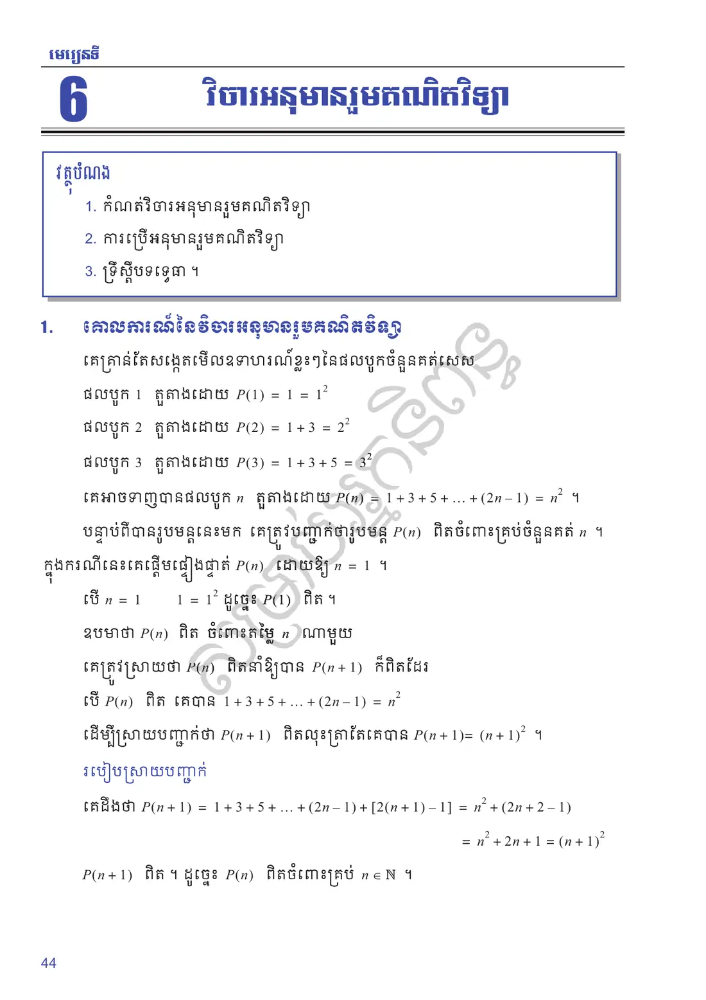
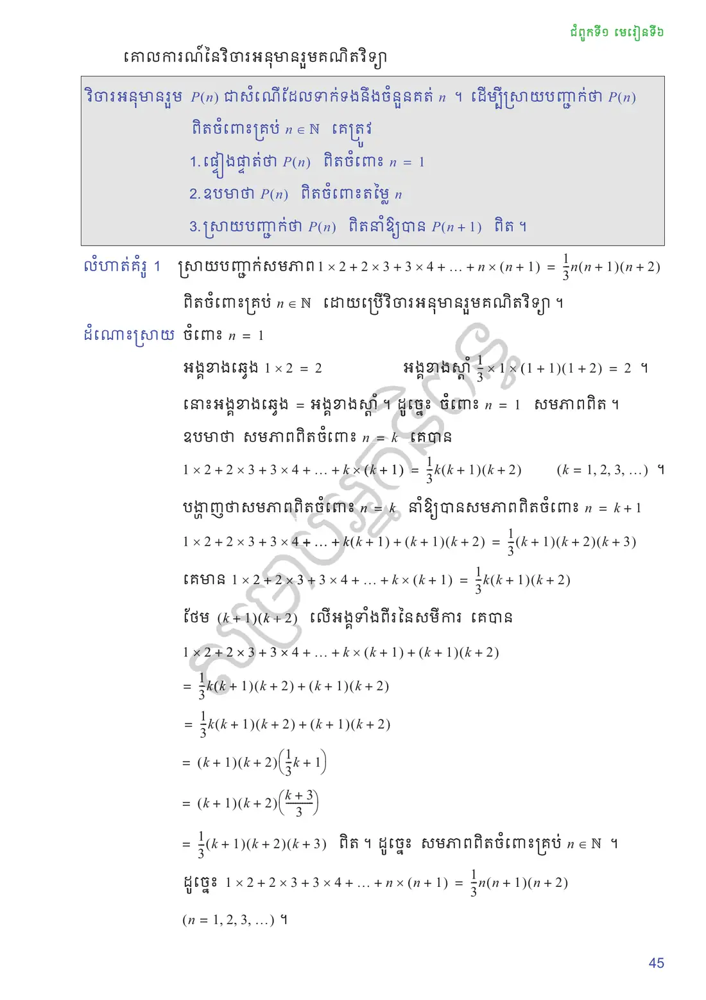
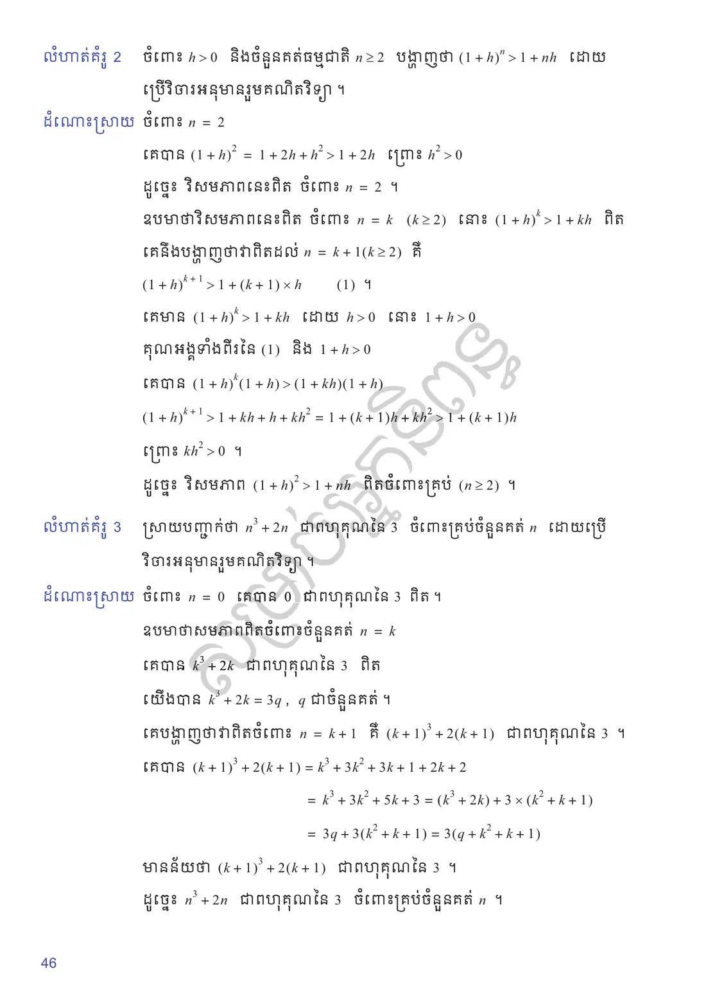
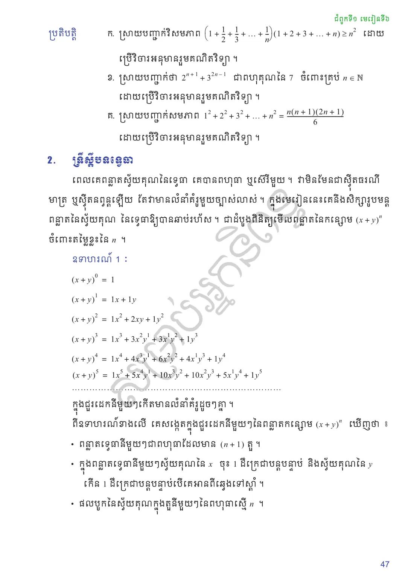
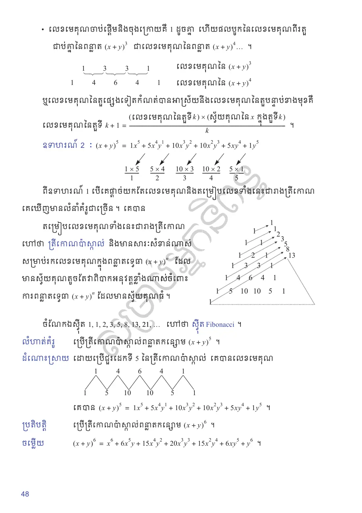
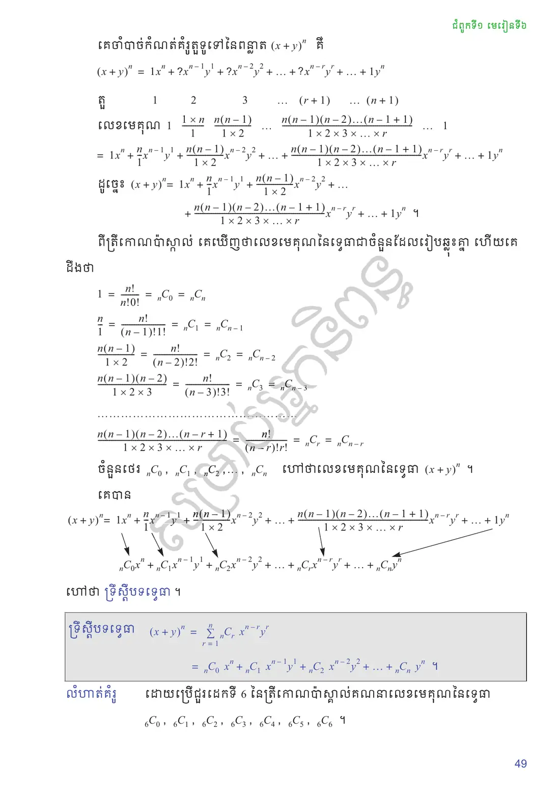
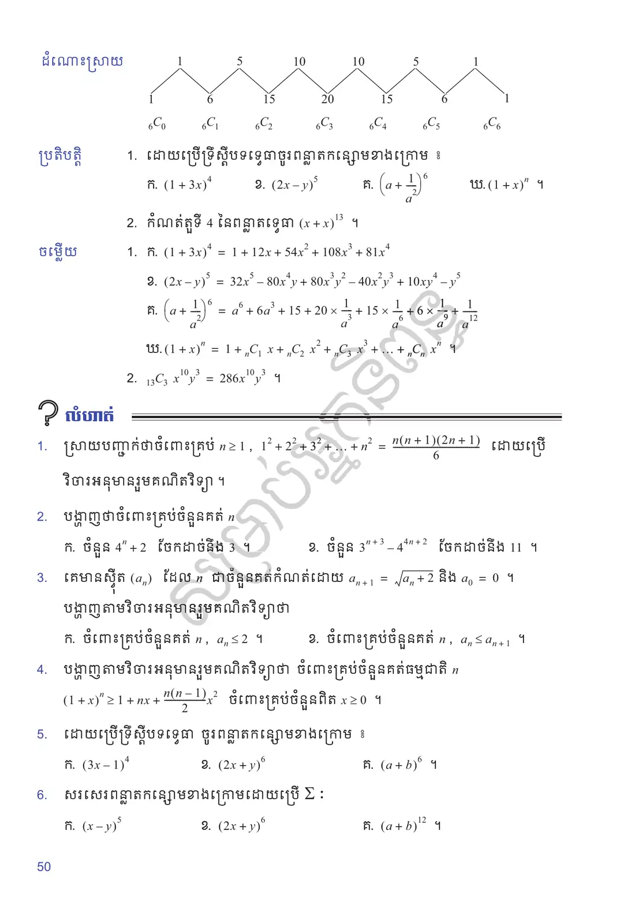
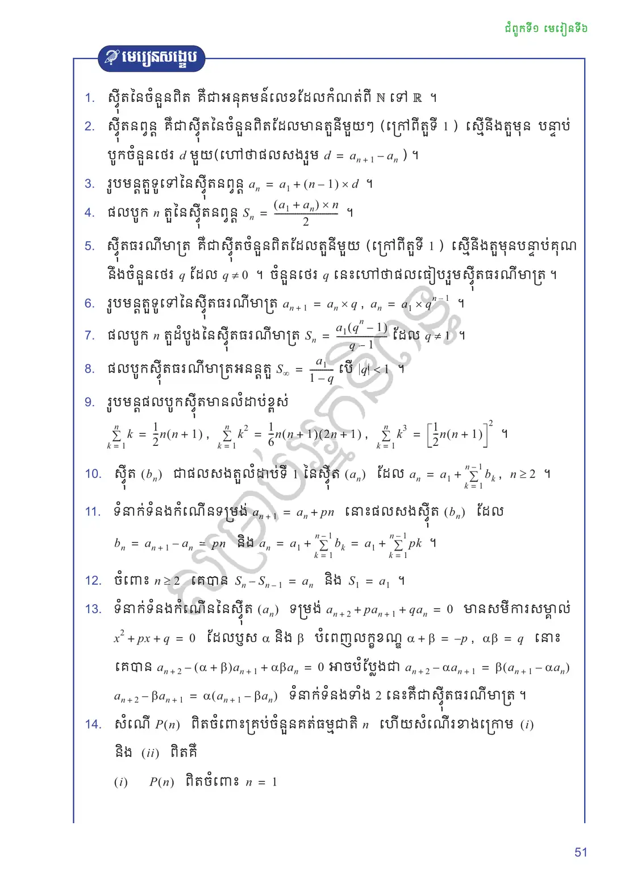
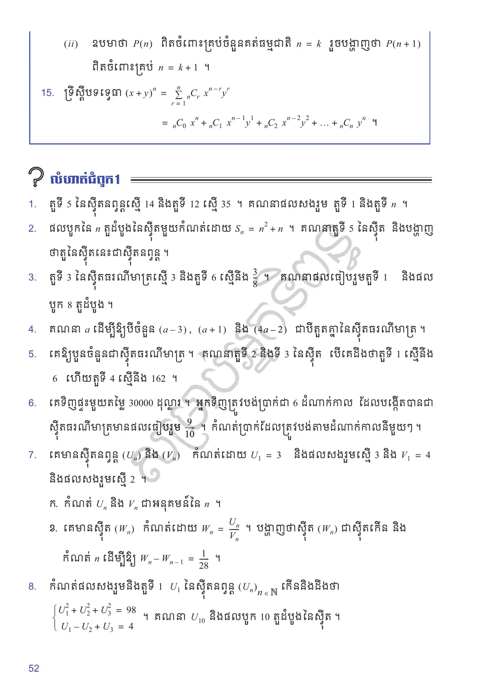
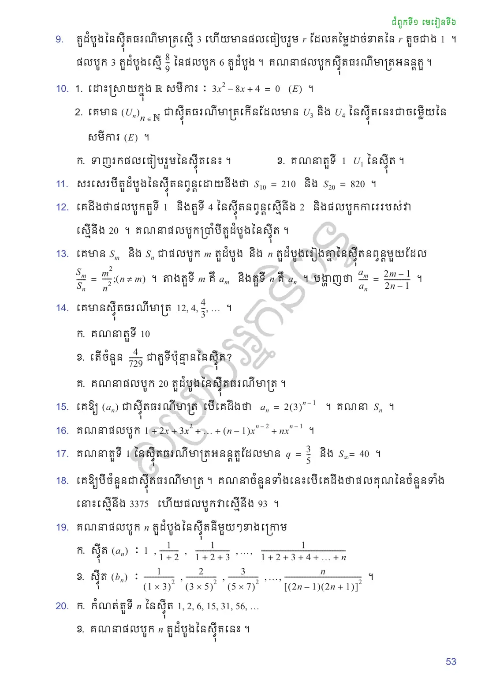
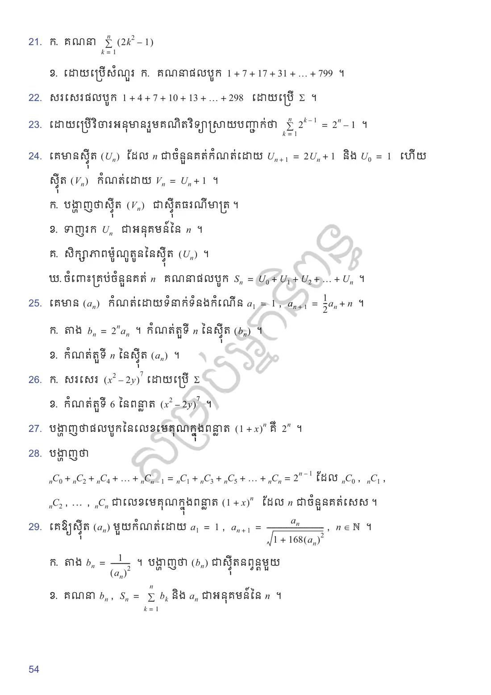
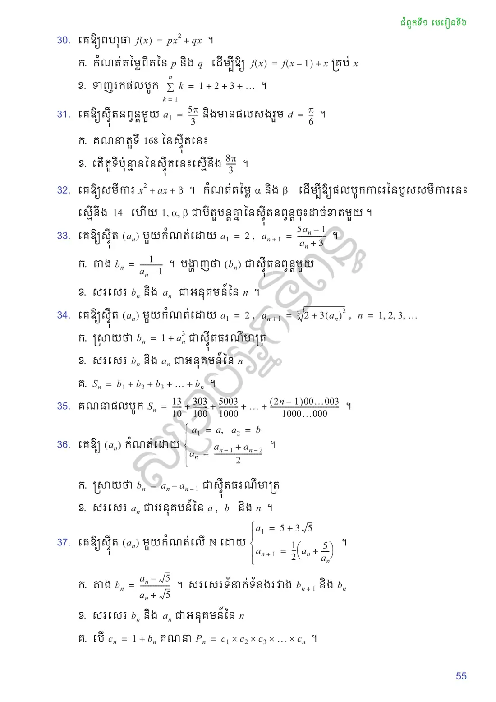
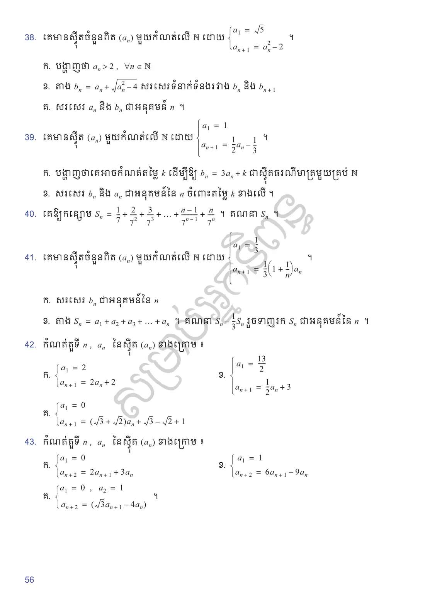
លំហាត់អនុវត្តន៍
ស្រាយបញ្ជាក់ថាចំពោះគ្រប់ \(n \ge 1\), \(1^2 + 2^2 + 3^2 + \ldots + n^2 = \dfrac{n(n + 1)(2n + 1)}{6}\) ដោយប្រើវិចារអនុមានរួមគណិតវិទ្យា ។
បង្ហាញថាចំពោះគ្រប់ចំនួនគត់ \(n\)
ចំនួន \(4^n + 2\) ចែកដាច់នឹង \(3\) ។
ចំនួន \(3^{n+3} - 4^{4n+2}\) ចែកដាច់នឹង \(11\) ។
គេមានស៊ីត \((a_n)\) ដែល \(n\) ជាចំនួនគត់កំណត់ដោយ \(a_{n+1} = \sqrt{a_n + 2}\) និង \(a_0 = 0\) ។ បង្ហាញតាមវិចារអនុមានរួមគណិតវិទ្យាថា
ចំពោះគ្រប់ចំនួនគត់ \(n\), \(a_n \le 2\) ។
ចំពោះគ្រប់ចំនួនគត់ \(n\), \(a_n \le a_{n+1}\) ។
បង្ហាញតាមវិចារអនុមានរួមគណិតវិទ្យាថា ចំពោះគ្រប់ចំនួនគត់ធម្មជាតិ \(n\) \((1 + x)^n \ge 1 + nx + \dfrac{n(n - 1)}{2}x^2\) ចំពោះគ្រប់ចំនួនពិត \(x \ge 0\) ។
ដោយប្រើទ្រឹស្តីបទទ្វេធា ចូរពន្លាតកន្សោមខាងក្រោម ៖
\((3x - 1)^4\)
\((2x + y)^6\)
\((a + b)^6\) ។
សរសេរពន្លាតកន្សោមខាងក្រោមដោយប្រើ \(\Sigma\) ៖
\((x - y)^5\)
\((2x + y)^6\)
\((a + b)^{12}\) ។
សំណួរពហុជ្រើសរើស
ជ្រើសរើសចម្លើយត្រឹមត្រូវតែមួយ រួចចុច «ពិនិត្យ»។ ចម្លើយរបស់អ្នកត្រូវបានរក្សាទុកក្នុងកុំព្យូទ័រនេះ។
✎ សំណួរទី ១–១០
✎ សំណួរទី ១១–២០
តេស្តសមត្ថភាព ៖ មេរៀនទី ៦ វិចារអនុមានរួមគណិតវិទ្យា (វិទ្យាសាស្ត្រ) — ២០ សំណួរ · ៣៥ នាទី